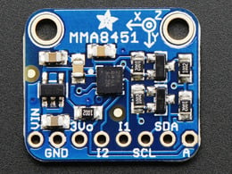
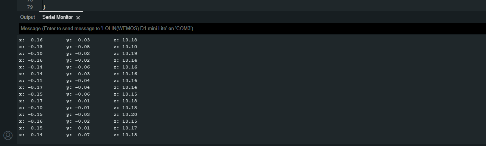

Testing the Accelerometer
In order to understand the this component it is important to review the supporting technical documentation:

We can see from table 12 on page 20 that the x,y and z values are stored in to MSB and LSB values in the respectiuve registers 0x1,0x2,..., 0x6
Normally we would have to write the code to obtain the information from the chip ourselves luckily, libaries are written for us:
Luckily you can click these links below to download the zips that needed to be addedd to the Arduino Libraries:
- Wire
- Adafruit_MMA8451
- Adafruit_Sensor
- Adafruit_BusIO (needed for the Adafruit_I2CDevice.h dependency required by MMA8451)
Once downloaded, you can use the import function within the Arduino software to unzip the folders into /path/to/Arduino/Libraries/, Sketch -> Include Library -> Add .Zip Library..., then navigate to the /path/to/zipped_library to include it.
Developing the script
-
Create a new a script call it something meaningful like,
accelerometer_test.ino -
Start by adding the standard header information about the script
-
Using the
#includedirective reference the wire, Adafruit_MMA845, Adafruit_Sensor libraries:
-
Because
cppis a obkect orientated programming lanaguage we have the ability to use repeatable templates (classes) for code as objects. Next we create object of theAdafruit_MMA8451class -
Next we need to add the following code to inside the
void setup(void):- Set up serial communication
- Set pin modes
- Set up our
mmaobjects communication to the MMA8451Q chip over IIC
... void setup(void){ Serial.begin(115200); // setting Baudrate pinMode(D0, OUTPUT); // PWM (motor pin) pinMode(D5, OUTPUT); // Direction (SCL pin) // Motor in stop state digitalWrite(D5, LOW); analogWrite(D0, 0); // connect to the MMA8451Q sensor, over Pin 4 if (!mma.begin()){ Serial.println("Couldnt start"); while (1) ; } // Set range to required G mma.setRange(MMA8451_RANGE_2_G); // divides each recieved x,y and z by 4096 // mma.setRange(MMA8451_RANGE_4_G); // divides each recieved x,y and z by 2048 // mma.setRange(MMA8451_RANGE_8_G); // divides each recieved x,y and z by 1024 } ... -
Now we need to build the functionality to turn on/off and change the direction of the motor and return the vibration sensor data to the terminal, reproduce the following code for the
void loop(void):void loop(){ sensors_event_t event; mma.getEvent(&event); digitalWrite(D5, LOW); // Motor Forward @500 analogWrite(D0, 500); for (int i = 0; i < 200; i++){ sensors_event_t event; printEvent(); delay(10); } digitalWrite(D5, LOW); // Motor Stop digitalWrite(D0, LOW); for (int i = 0; i < 100; i++){ sensors_event_t event; printEvent(); delay(10); } digitalWrite(D5, LOW); // Motor Forward @1000 analogWrite(D0, 1000); for ( int i = 0; i < 200; i++){ sensors_event_t event; printEvent(); delay(10); } digitalWrite(D5, LOW); // Motor Stop digitalWrite(D0, LOW); for (int i = 0; i < 100; i++){ sensors_event_t event; printEvent(event); delay(10); } }It appears there is some repeat code here, that is fine we just want to show that there are clear steps. You could refactor this to remove duplicates like thissensors_event_t event; mma.getEvent(&event); digitalWrite(D5, LOW); // Motor Forward @500 analogWrite(D0, 500); getData(200); digitalWrite(D5, LOW); // Motor Stop digitalWrite(D0, LOW); getData(100); digitalWrite(D5, LOW); // Motor Forward @1000 analogWrite(D0, 1000); getData(200); digitalWrite(D5, LOW); // Motor Stop digitalWrite(D0, LOW); getData(100); void getData(int bound){ for (int i = 0; i < bound; i++){ sensors_event_t event; printEvent(event); delay(10); } } -
You'll notice that there is a function called
printEvent(), we need to add this to the buttom of the script:void printEvent(sensors_event_t event){ mma.getEvent(&event); Serial.print("x: "); Serial.print(event.acceleration.x); Serial.print("\ty: "); Serial.print(event.acceleration.y); Serial.print("\tz: "); Serial.print(event.acceleration.z); Serial.println(); } -
Running the code you should see the following, if you can even wobble the board to...

Full code below
Click here
Click here
/*
* AUTHORS: YOUR NAMES
* VERSION: 1.0.O
* NOTES:
* - for testing the MMA8451Q accelerometer sensor
* - Make sure common ground between sensor and microcontroller.
* - Pin = 4 SDA Pin 5 = SCL on Lolin.
*/
#include <Wire.h>
#include <Adafruit_MMA8451.h>
#include <Adafruit_Sensor.h>
Adafruit_MMA8451 mma = Adafruit_MMA8451();
void setup(void)
{
Serial.begin(115200);
pinMode(D0, OUTPUT); // PWM
pinMode(D5, OUTPUT); // Direction
// Motor in stop state
digitalWrite(D5, LOW);
analogWrite(D0, 0);
if (!mma.begin())
{
Serial.println("Couldnt start");
while (1)
;
}
// Set range to required G
mma.setRange(MMA8451_RANGE_2_G); // divides each recieved x,y and z by 4096
// mma.setRange(MMA8451_RANGE_4_G); // divides each recieved x,y and z by 2048
// mma.setRange(MMA8451_RANGE_8_G); // divides each recieved x,y and z by 1024
}
void loop()
{
sensors_event_t event;
mma.getEvent(&event);
digitalWrite(D5, LOW); // Motor Forward @500
analogWrite(D0, 500);
getData(200);
digitalWrite(D5, LOW); // Motor Stop
digitalWrite(D0, LOW);
getData(100);
digitalWrite(D5, LOW); // Motor Forward @1000
analogWrite(D0, 1000);
getData(200);
digitalWrite(D5, LOW); // Motor Stop
digitalWrite(D0, LOW);
getData(100);
}
void getData(int bound){
for (int i = 0; i < bound; i++){
sensors_event_t event;
printEvent(event);
delay(10);
}
}
void printEvent(sensors_event_t event){
mma.getEvent(&event);
Serial.print("x: ");
Serial.print(event.acceleration.x);
Serial.print("\ty: ");
Serial.print(event.acceleration.y);
Serial.print("\tz: ");
Serial.print(event.acceleration.z);
Serial.println();
}